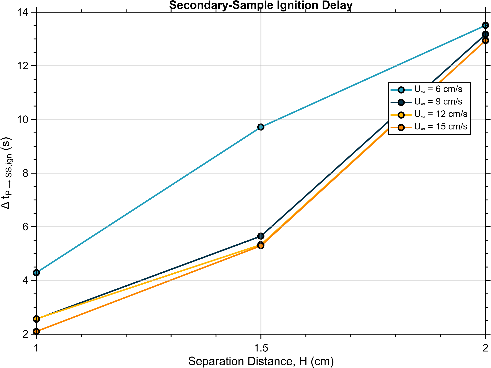
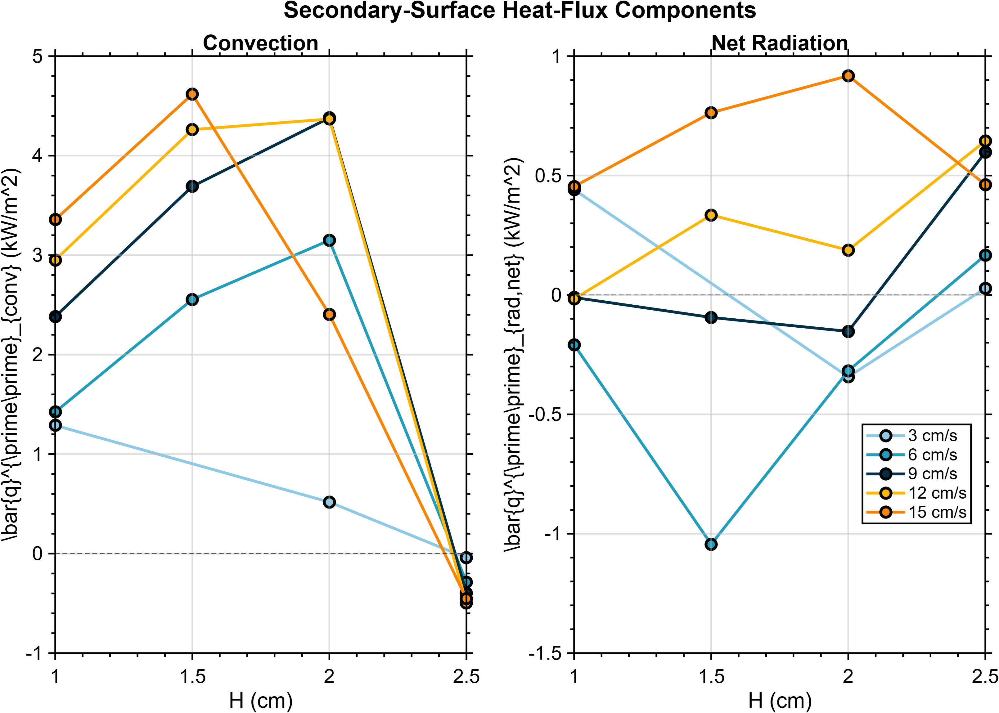
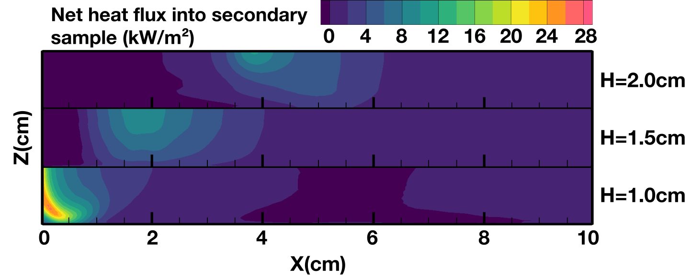
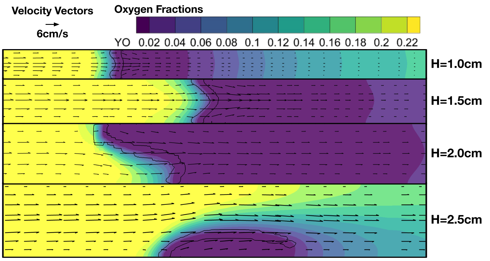
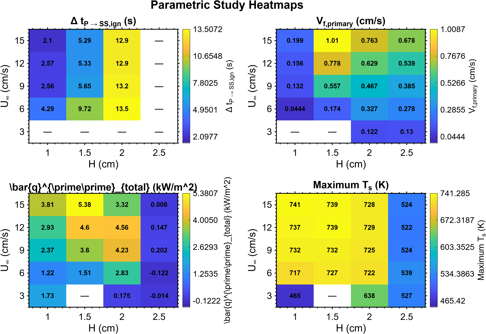

01 — OVERVIEW
Why study closely spaced fuels?
Flame spread occurs through a feedback process: heat from the gas-phase flame raises the temperature of nearby solid fuel, the solid pyrolyzes and releases combustible vapor, and that vapor mixes with oxygen to sustain additional gas-phase combustion.
In microgravity, buoyancy-driven flow is strongly reduced. As a result, flame behavior becomes much more sensitive to imposed airflow, transport within the gap, and the geometric relationship between nearby combustible surfaces.
My research investigates two parallel solid-fuel samples. Only the primary sample is externally ignited. The secondary sample can ignite only if feedback from the primary flame provides enough energy to initiate pyrolysis and establish a sustained secondary reaction zone.
02 — NUMERICAL MODEL
Coupled gas and solid flame-spread simulation
Simulations are performed using an in-house Fortran computational fire-dynamics model. The code advances the gas and solid domains together using adaptive time stepping.
The model resolves fluid flow, heat and mass transfer, gas-phase combustion, radiation, heat conduction within the solid fuel, and pyrolysis.
The computational model solves transient mass, momentum, energy, and species conservation equations while coupling gas-phase combustion, radiation, and solid pyrolysis.
03 — PARAMETRIC STUDY
Varying both separation distance and airflow
The initial project examined separation distance at a single imposed airflow. I later expanded the study into a two-parameter investigation of sample spacing and forced-flow velocity.
04 — IGNITION REGIME
When does the secondary sample actually ignite?
The first step in comparing the full parameter space was to classify the final behavior of each simulation.
The resulting regime map separates cases with sustained secondary ignition from cases in which combustion remains associated only with the primary sample, quenches, or still requires additional interpretation.
The map shows that the ignition boundary cannot be described using separation distance alone across the entire parameter space. At sufficiently weak imposed flow, even relatively close configurations can fail to sustain the same behavior observed at higher velocities.
.png)
05 — IGNITION TIMING
Larger gaps require a longer heating period
For cases that successfully produce secondary ignition, separation distance strongly affects the time required for the secondary sample to ignite.
Increasing H weakens the direct thermal interaction between the primary flame and secondary surface. The secondary solid therefore requires a longer period of heating before reaching pyrolysis conditions.
Increasing imposed airflow generally reduces the ignition delay within the successful ignition regime, although the influence of airflow must be interpreted together with the changing flame shape and transport environment.

06 — THERMAL FEEDBACK
Separating convection and radiation
To understand why the ignition boundary changes, I separately evaluate convective and radiative heat transfer into the secondary sample.
The largest change occurs in the convective contribution. At H = 2.5 cm, average convection into the secondary surface falls to approximately zero or becomes slightly negative across the cases shown, while net radiation remains positive for several flow speeds.
This behavior is consistent with the larger gap becoming thermally decoupled from the primary flame. Radiation alone can still reach the secondary sample, but the combined thermal environment is not necessarily sufficient to establish sustained pyrolysis and ignition.

07 — LOCAL HEATING
Peak heat flux alone does not determine ignition
Earlier analysis showed that a secondary surface can experience a strong instantaneous local heat-flux peak without successfully igniting.
What matters is not only the peak value, but also where heating occurs, how much surface area receives that heating, and how long the energy input is maintained.

08 — OXYGEN TRANSPORT
Closer spacing improves heating but can restrict oxygen
Decreasing separation brings the secondary sample closer to the primary flame and strengthens thermal coupling. However, the smaller gap also places a larger fraction of the inter-sample region inside the reacting and oxygen-depleted flow.
Larger gaps remain better ventilated, but the secondary surface may then be too far from the primary flame to receive sufficient heating for strong pyrolysis.
The result is a competition between thermal coupling and reactant transport rather than a simple relationship in which smaller separation is always more hazardous.

09 — GENERALIZED PARAMETRIC BEHAVIOR
Looking across the entire H–U∞ space
Rather than comparing individual simulations one at a time, I now extract a common set of metrics from each case and examine them across the complete parameter space.
The heatmaps below compare secondary ignition delay, primary flame-spread rate, average secondary-surface heat flux, and maximum secondary-surface temperature.

Separation controls coupling
Increasing H weakens interaction between the primary flame and secondary surface and substantially increases secondary ignition delay.
Airflow changes the timescale
Increasing imposed flow generally accelerates primary flame spread and reduces secondary ignition delay within successful ignition cases.
Thermal response is non-monotonic
Intermediate spacing can produce stronger useful thermal interaction than either strongly confined or widely separated configurations.
Local behavior matters
Global averages and peak values alone do not predict ignition. The spatial and temporal distribution of heating must also be considered.
Pyrolysis is a key transition
The waiting period before secondary ignition is largely associated with heating the solid to the point where secondary-surface pyrolysis begins.
Oxygen and heat compete
Small gaps can become oxygen limited, while large gaps can remain well ventilated but too weakly heated to sustain secondary ignition.
10 — ANALYSIS METHODOLOGY
Defining secondary ignition consistently
As the number of simulations increased, visual inspection alone was no longer sufficient for classifying ignition.
I therefore developed a repeatable definition combining gas-phase reaction, solid response, and persistence in time.
This allows every case in the parametric study to be evaluated using the same physical criteria rather than subjective interpretation of individual contour images.
The ignition criterion was developed as part of the research workflow so that all parametric cases could be classified using consistent physical evidence.
11 — FLAME EVOLUTION
Following the flame through time
Time-resolved temperature fields reveal how the primary flame grows, interacts with the secondary sample, and eventually develops into a coupled flame structure.
These transient fields are especially important because ignition is not an instantaneous event. Surface heating, pyrolysis, reactant transport, and gas-phase reaction evolve together over several seconds.
12 — CURRENT INTERPRETATION
Secondary ignition is a coupled transport problem.
The current results indicate that separation distance and airflow cannot be treated independently.
Separation controls how strongly the primary flame can heat the neighboring fuel, while imposed flow alters flame shape, spread rate, oxygen delivery, and the residence of hot gases within the gap.
Successful secondary ignition requires the solid to receive sufficient and persistent thermal feedback to begin pyrolysis, while also maintaining a gas-phase environment in which the released fuel vapor can mix with oxygen and sustain combustion.
13 — RESEARCH EVOLUTION
From individual CFD cases to a predictive framework
The original phase of this work focused on understanding the effect of separation distance at U∞ = 6 cm/s.
That study showed that closer spacing increases thermal interaction but can also increase confinement and oxygen depletion. Intermediate spacing produced particularly strong secondary-surface heating.
The project has since expanded into a broader parametric investigation in which common ignition, heat-transfer, transport, and flame-spread metrics are extracted from each simulation. The long-term goal is to develop a generalized relationship connecting geometry, airflow, and flame-spread behavior.
14 — ONGOING WORK
Current research questions
Can a critical separation distance be identified for secondary ignition, and does it vary systematically with imposed airflow?
Which local thermal quantity best predicts the transition from secondary heating to sustained pyrolysis?
How do convective and radiative heat-transfer mechanisms change as the flame becomes increasingly confined?
Can flame-spread and secondary-ignition behavior be collapsed into a generalized relationship involving H and U∞?